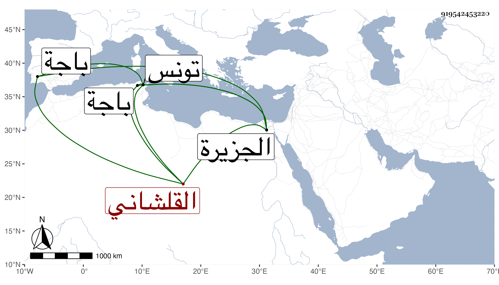

0902Sakhawi.DawLamic.ITO20230111-ara1.EIS1600.919542453220
Biography ID: 919542453220
466
حسن بن عمر بن محمد القلشاني أخو حسين وهما توءمان ومحمد الآتيين . ممن أخذ عن الأحمدين النخلي والصائغ والسلاوي وغيرهم وتميز في فنون ، وولي قضاء الجزيرة القبلية لتونس ثم باجة . وكان أخوه محمد مستورا به في قضاء الجماعة فلما مات انكشف . مات سنة ثلاث وسبعين عن تسع وثلاثين سنة .
